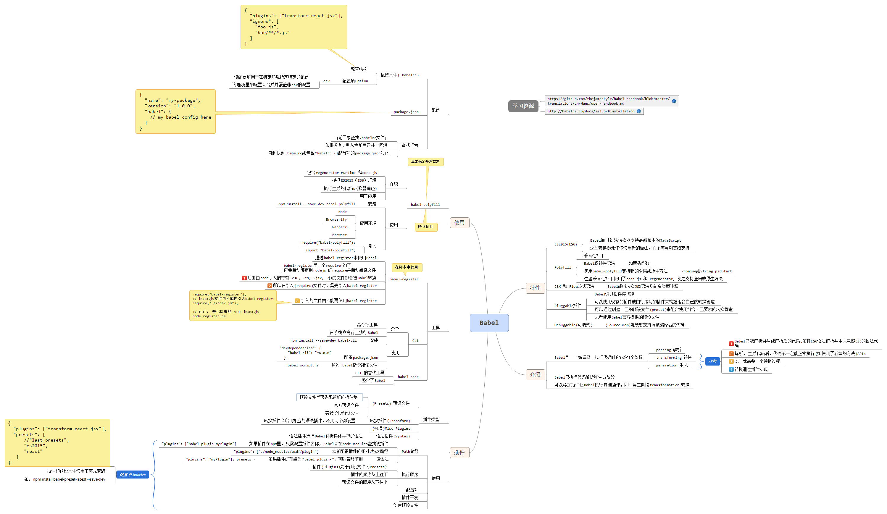

1. Babel
1.1. 概念
JavaScript编译器。将新版本的JavaScript解析转换编译成现有环境能支持的代码。 但Babel 本身只负责解析和生成代码（语法转换）（如ES6的箭头函数解析成ES5支持的函数），不进行的代码转换，转换通过插件来实现。
1.2. 如何转换成环境可执行的代码
Babel通过transformation 转换插件将语法转义后的代码转换成部署环境支持的代码。 如 babel-polyfill 兼容性补丁，模拟ES6环境，使环境支持最新的全局对象或原生方法的APIs。
1.3. 如何使用
1.3.1. 创建配置文件 .babelrc
{
"presets": ["last-presets"],
"plugins": ["transform-react-jsx"],
"ignore": [
"foo.js",
"bar/**/*.js"
]
}
